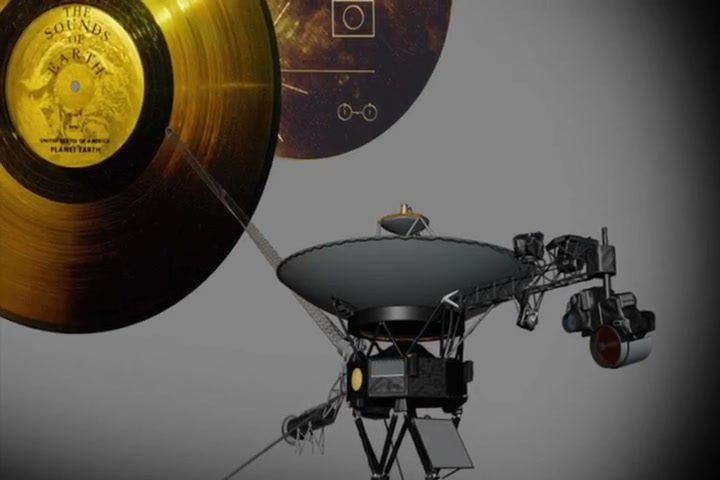

Mục tiêu bài học & khởi động
Mục tiêu bài học
Sau bài học, học viên có thể:
- Gọi tên từ và cụm từ của 4 nhóm: câu chuyện cuộc đời, núi non và phiêu lưu, khám phá vũ trụ, thông điệp và bản ghi.
- Giải thích vị trí của dấu ngoặc kép, dấu phẩy và dấu chấm trong lời nói trực tiếp, và vì sao ta viết said Kammerlander chứ không viết said he.
- Nhớ lại sứ mệnh của Voyager 1 và những gì Đĩa Vàng (Golden Record) mang theo: ảnh, âm thanh, âm nhạc và lời chào.
- Dùng was born, thì quá khứ đơn, thì hiện tại hoàn thành và famous for + -ing đúng chỗ khi kể chuyện đời một người.
- Phân tích bài The world’s greatest mountaineer: đoạn nào nói về năm sinh của Messner, lý do ông nổi tiếng, lời của chính ông, nhận xét của người khác và cuộc sống hiện nay của ông.
- Tìm con số, sự kiện và lý do trong hai video về Đĩa Vàng và trong các bài PET Reading, Listening bổ sung.
- Nói một đoạn ngắn khắc họa một người bạn ngưỡng mộ, trích lời người đó bằng lời nói trực tiếp đúng quy tắc.
- Đánh giá một bộ phim tài liệu bạn đã xem (Topic 9) hoặc một sự kiện quan trọng trong lịch sử Việt Nam (Topic 4) theo khung 7 bước.
- Viết một đoạn văn về lợi ích và nhược điểm của việc khám phá vũ trụ, kết thúc bằng một nhận định rõ ràng.
Lead-in 1 · Nhà leo núi, con tàu vũ trụ và chiếc đĩa vàng: quan sát, phỏng đoán và nêu cảm nghĩ

- Câu 1‘Who do you think this man is? Look at his clothes and the place for clues.’
- Câu 2‘Climbers like him go above 8,000 metres, sometimes with no oxygen tanks. What happens to the human body up there?’
- Câu 3‘Would you follow him up a dangerous peak if he invited you? Why or why not?’
- Câu 1‘Can you name the striped planet? How big is it next to Earth, do you think?’
- Câu 2‘Why do scientists send machines, not people, this far from home?’
- Câu 3‘What connects a mountaineer and a spacecraft? Find two things they have in common.’
- Câu 1‘What do you think this rocket is carrying, and where is it going?’
- Câu 2‘How would you feel standing a few kilometres away at the moment it takes off?’
- Câu 3‘Have you ever watched a launch, live or online? Which part did you find most exciting?’

- Câu 1‘Read the label. Whose sounds do you think are on this record?’
- Câu 2‘Why would anyone fix a record to a spacecraft instead of a book or a letter?’
- Câu 3‘Records, cassettes, CDs, memory sticks: which of these does your family still keep at home?’

- Câu 1‘What do you think these lines and circles are trying to explain?’
- Câu 2‘Why might the makers have used drawings here and no words at all?’
- Câu 3‘If you had to explain your life without words, which three pictures would you draw?’
- Câu 1‘Where was the camera when this picture was taken, do you think?’
- Câu 2‘Which parts of the planet can you recognise: oceans, clouds, ice or land?’
- Câu 3‘Would you go into space as a flight doctor? What would worry you most?’

- Câu 1‘Which organ is this, and which of the vessels around it can you name?’
- Câu 2‘The sound of a human heart went into space on the Golden Record. Why do you think the team chose it for other life forms?’
- Câu 3‘If you could add one sound from a hospital to that message, which would you choose, and why?’
Lead-in 2 · Câu chuyện cuộc đời, rủi ro và thông điệp: đồng ý hay không đồng ý?
1 · You can learn more from a person’s life story than from a textbook.
Bài mẫu
I agree, at least when it comes to remembering things. I’ve forgotten most of the dates in my history textbook, but I still remember my grandfather’s story about carrying wounded soldiers across a river at night. A real person’s choices stay with you much longer than a list of facts.
Dịch nghĩa
Tôi đồng ý, ít nhất là ở chuyện ghi nhớ. Phần lớn các mốc năm trong sách lịch sử tôi quên hết rồi, nhưng chuyện ông tôi khiêng thương binh qua sông trong đêm thì tôi vẫn nhớ. Những lựa chọn của một con người có thật ở lại trong ta lâu hơn nhiều so với một danh sách sự kiện.
2 · A famous person’s childhood explains most of their success.
Bài mẫu
I don’t think so. Plenty of people have a happy, comfortable childhood and never do anything special, and one of the best surgeons on my placement grew up selling vegetables at a market. Childhood can open a door, but it’s the hard work in your twenties that gets you through it.
Dịch nghĩa
Tôi không nghĩ vậy. Nhiều người có tuổi thơ hạnh phúc, đủ đầy mà cả đời chẳng làm được gì đặc biệt, còn một trong những bác sĩ phẫu thuật giỏi nhất ở nơi tôi đi thực tập thì lớn lên bằng nghề bán rau ngoài chợ. Tuổi thơ có thể mở ra một cánh cửa, nhưng chính sự chăm chỉ ở tuổi hai mươi mới đưa bạn bước qua cánh cửa đó.
3 · Climbing the world’s highest mountains is worth the risk.
Bài mẫu
Not for me. On our field exercise last spring we only climbed about 1,500 metres, and two cadets still twisted their ankles and had to be helped down. I admire people like Messner, but I’d rather keep all ten toes.
Dịch nghĩa
Với tôi thì không. Trong đợt huấn luyện dã ngoại mùa xuân năm ngoái, chúng tôi chỉ leo khoảng 1.500 mét mà vẫn có hai học viên bị trẹo mắt cá chân, phải có người dìu xuống. Tôi ngưỡng mộ những người như Messner, nhưng tôi vẫn muốn giữ đủ mười ngón chân của mình hơn.
4 · A message for other life forms should contain music, not words.
Bài mẫu
Mostly, yes. Nobody out there will understand Vietnamese or English, but a rhythm might make sense to any creature that can hear. I’d still add one short spoken greeting, though, just to show them we can talk.
Dịch nghĩa
Phần lớn là đúng. Ngoài kia sẽ chẳng ai hiểu tiếng Việt hay tiếng Anh, nhưng một nhịp điệu thì sinh vật nào có thính giác cũng có thể cảm nhận được. Dù vậy, tôi vẫn sẽ thêm một lời chào ngắn bằng giọng nói, chỉ để cho họ thấy chúng ta biết nói chuyện.
5 · Every school should teach the history of space exploration.
Bài mẫu
Not every school, no. Our secondary school timetable was already packed, and I’d rather have had more first aid classes. A couple of lessons as part of physics would be enough, like the afternoon our teacher played the Moon landing on an old projector.
Dịch nghĩa
Không, không phải trường nào cũng cần. Thời khóa biểu hồi phổ thông của tôi vốn đã kín mít, tôi thà được học thêm sơ cứu còn hơn. Vài tiết lồng vào môn vật lý là đủ, như buổi chiều thầy giáo chiếu cảnh con người đặt chân lên Mặt Trăng bằng chiếc máy chiếu cũ.
6 · Our phones keep a better record of our lives than any diary.
Bài mẫu
I disagree. My phone has about eight thousand photos, but they show where I was, not what I was thinking. My mum has kept a diary since her first job on a children’s ward, and a single page of it tells you more than a whole album.
Dịch nghĩa
Tôi không đồng ý. Điện thoại của tôi có khoảng tám nghìn tấm ảnh, nhưng chúng chỉ cho thấy tôi đã ở đâu, chứ không cho thấy tôi đã nghĩ gì. Mẹ tôi viết nhật ký từ hồi mới đi làm ở khoa nhi, và chỉ một trang nhật ký thôi cũng kể được nhiều hơn cả một cuốn album.
- I’m with you on that, because …
- That’s true for …, but not for …
- Speaking from my own training, …
- I’d go along with that, as long as …
- I’m not so sure about that, because …
Lead-in 3 · Một cuốn tiểu sử thường kể những gì?
SB tr. 137 Ex 1 · Hãy nghĩ ra ba thông tin bạn cho là chắc chắn có trong một cuốn tiểu sử. Ghi vào ô bên dưới rồi so với bạn bên cạnh.
Bài mẫu
- Birth date and place
- Major achievements
- Career highlights
- Also common: childhood and family, a turning point, the person’s own words, other people’s opinions, life today or legacy
Bảy tấm thẻ về Neil Armstrong: đánh số 1–7 theo thứ tự một cuốn tiểu sử sẽ kể
1Neil Armstrong is famous for being the first person to walk on the Moon.
2He was born on 5 August 1930 near Wapakoneta, a small town in Ohio, in the United States.
3As a small boy, he went on his first plane ride with his father, and he got a student pilot’s licence on his sixteenth birthday, before he could even drive a car.
4After flying 78 combat missions for the US Navy in Korea, he became a test pilot, and in 1962 NASA chose him as an astronaut.
5In July 1969, as he stepped down from Apollo 11’s landing craft onto the Moon, he said, ‘That’s one small step for man, one giant leap for mankind.’
6‘Neil was among the greatest of American heroes,’ said President Barack Obama when Armstrong died in 2012.
7Today the Armstrong Air & Space Museum in his hometown tells his story; it opened exactly three years after the Moon landing.
Lead-in 4 · Bạn đã biết bao nhiêu từ của từng nhóm trong 4 nhóm?
Which words do you need to tell someone’s life, from the day they were born to old age?
Picture a climb in the Himalayas: which words do you know for the people, the places and the dangers?
Which words can you use for rockets, planets and the people who explore beyond Earth?
How can people keep a voice, a song or a message for the future? List the words you know.